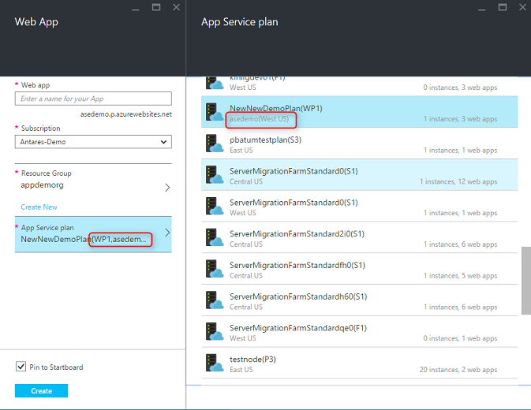

Lab 1: Tìm hiểu công nghệ Azure
Azure là nền
tảng điện toán đám mây mở và linh hoạt cho phép bạn nhanh chóng xây
dựng, triển khai và quản lí các ứng dụng thông qua mạng lưới toàn
cầu của trung tâm dữ liệu Microsoft. Azure luôn đảm bảo tính sẵn
sàng và có thiết kế cân bằng và có khả năng tự phục hồi khi phần
cứng bị sự cố . Bạn có thể sử dụng bất cứ ngôn ngữ , công cụ hay
nền tảng nào để xây dựng các ứng dụng . Và bạn có thể tích hợp các
ứng dụng trên đám mây công cộng của bạn với môi trường IT sẵn có.
Để làm được
những việc đó, trước hết bạn cần phải nắm được khái quát về điện
toán đám mây (cloud computing) và những khái niệm cơ bản về nền
tảng ứng dụng Windows Azure của Microsoft.
Để quản trị Microsoft Azure, Microsoft đã cung cấp cho chung ta một giao diện portal để quản lý đó là Management Portal. Các dịch vụ hiện tại đang có trong Microsoft Azure được phân loại thành các nhóm dịch vụ khác nhau trong Management Portal. Mục đích chính của việc phân loại thành các nhóm dịch vụ trong Management Portal là giúp người dùng dễ dàng nhận ra và tiếp cận một cách nhanh chóng đến các dịch vụ đang được cung cấp trên Microsoft Azure.
Management Portal: Azure cho ra đời web portal với tên gọi là Management Portal, nó cho phép người quản trị quản lý các tác vụ, thao tác cài đặt các dịch vụ trên Azure tuy nhiên có một số chức năng trên Azure mà chúng ta không thể quản trị bằng Management Portal. Hiện nay Microsoft đang cho ra đời phiên bản portal mới hơn với các tính năng tương tự như Management Portal và nó có tên gọi là Azure Preview Portal.
Thứ quan trọng nhất của một nền tảng cloud đó là thực thi một ứng dụng. Windows Azure cung cấp 3 lựa chọn cho việc này như hình dưới đây

Microsoft Windows Azure cung cấp IaaS (Infrastructure as a service – Hạ tầng như một dịch vụ), Web hosting và Paas (Platform as a service – Nền tảng như một dịch vụ)
Mỗi một trong
3 giải pháp này Virtual Machines (Các máy chủ ảo), Web Sites, và
Cloud Services (Các dịch vụ trên đám mây) có thể được sử dụng một
các riêng biệt. Bạn cũng có thể tạo ra một ứng dụng trong đó kết
hợp 2 hoặc cả 3 lựa chọn đó với nhau.
Virtual
Machines (Các máy chủ ảo) VM: Windows Azure cho phép tạo ra các
máy chủ ảo theo yêu cầu, bất kể nó được tạo ra theo một nguyên mẫu
có sẵn bởi Windows Azure hoặc do người dùng cung cấp. Và người dùng
có thể thuê các máy chủ ảo này theo giờ. Các tiếp cận này thường
được biết đến với cái tên “Hạ tầng như một dịch vụ” IaaS. Để tạo
một VM, bạn cần phải chỉ ra kích cỡ của VM và nó sẽ sử dụng VHD
(Virtal Hard Disk – Ổ đĩa ảo) nào. Như trong hình, Windows Azure
Virtual Machines cung cấp một danh sách các VHD tiêu chuẩn, được
cung cấp bởi Microsoft, bao gồm Windows Server 2008 R2, Windows
Server 2012, và Windows Server 2008 R2 kèm với SQL Server, ngoài ra
còn có cả Linux được cung cấp bởi các đối tác của Microsoft. Bạn
cũng có thể tải lên và tạo mới các VM từ các VHD của mình. Mọi sự
thay đổi đối với VHD trong quá trình VM chạy sẽ được lưu trữ một
các liên tục. Do đó đảm bảo khi tạo mới một VM từ VHD đó, nó sẽ cập
nhật trạng thái mới nhất của VHD. Đồng thời nó cũng cho phép bạn
sao chép VHD đó ra khỏi Windows Azure và thực thi cục bộ. Windows
Azure VMs có thể được sử dụng theo rất nhiều cách khác nhau. Bạn có
thể sử dụng chúng để tạo ra các môi trường phát triển và kiểm thử
không quá đắt, khi mà bạn có thể tắt đi khi không sử dụng đến. Bạn
có thể tạo và chạy các ứng dụng mà sử dụng bất kỳ ngôn ngữ hay thư
viện nào mà bạn muốn. Những ứng dụng này có thể sử dụng bất kỳ lựa
chọn quản lý dữ liệu nào được cung cấp bởi Windows Azure, trong đó
bạn có thể chọn SQL Server hoặc DBMS (Database Management System)
khác chạy trên một hoặc nhiều VMs. Một lựa chọn khác là sử dụng
Windows Azure VMs như một sự mở rộng cho trung tâm dữ liệu nội bộ
của bạn (on-premises datacenter), thực thi SharePoint hoặc các ứng
dụng khác. Để hỗ trợ việc này, nó cho phép bạn tạo ra Windows
Domains trên cloud bằng việc chạy Active Directory trong Windows
Azure VMs.
Web Sites:
Một trong những thứ phổ biến nhất mà mọi người hay thực hiện trên
cloud đó là chạy các web site và các ứng dụng web. Windows Azure
VMs cho phép điều này, nhưng bạn vẫn phải có trách nhiệm quản lý
một hoặc nhiều VMs. Điều mà bạn chỉ muốn đó là một web site mà
không quan tâm tới việc ai quản trị các VMs đó. Đó chính là thứ mà
Windows Azure Web Sites cung cấp. Mô hình thực thi này cung cấp một
môi trường web sử dụng IIS (Internet Information Service). Bạn có
thể di chuyển một IIS web site hiện có lên Windows Azure Web Sites
hoặc tạo một cái mới tính trên cloud. Trong khi web site đang chạy,
bạn có thể thêm hoặc bớt một instance web site dựa trên các tham số
về cân bằng tải giữa các web site đó. Như trong hình bạn có thể
thấy, Windows Azure Web Sites cho phép nhiều web site thực thi trên
cùng một IIS (hay một VM) hoặc mỗi web site một IIS riêng biệt.
Windows Azure Web Sites hỗ trợ .NET, PHP và Node.js đi cùng với SQL
Database (từ ClearDB một đối tác của Microsoft) và MySQL cho việc
lưu trữ dữ liệu quan hệ. Nó cũng hỗ trợ các ứng dụng phổ biến như
WordPress, Joomla và Drupal. Mục tiêu là để cung cấp một nền tảng
hữu dụng với chi phí thấp, khả năng mở rộng, trong việc tạo các web
sites và các ứng dụng web trên môi trường public cloud.
Cloud
Services (Các dịch vụ đám mây): Giả sử bạn muốn xây dựng một ứng
dụng trên cloud cho phép rất nhiều người sử dụng đồng thời, mà
không đòi hỏi quá nhiều việc quản trị, và không được phép ngừng
hoạt động. Hoặc bạn là một nhà cung cấp phần mềm đóng gói thương
mại, ví dụ như cung cấp SaaS (Software as a service) bằng việc xây
dựng một phiên bản ứng dụng của mình trên cloud. Hoặc bạn là một
công ty mới khởi nghiệp tạo một ứng dụng cho người dùng mà mong
muốn rằng nó sẽ luôn tăng trưởng… Nếu bạn xây dựng trên Windows
Azure, mô hình thực thi này sẽ được sử dụng.
Windows Azure Web
Sites cho phép tạo các loại ứng dụng này, những có một số ràng
buộc. Bạn không có quyền quản trị truy cập, lấy ví dụ, bạn không
thể cài đặt một phần mềm bất kỳ. Windows Azure VMs cho phép rất
nhiều thứ mềm dẽo, bao gồm cả quyền truy cập quản trị, và bạn có
thể sử dụng để xây dựng một ứng dụng có khả năng mở rộng rất tốt,
nhưng đồng với nó là bạn phải nắm bắt rất nhiều thứ liên quan đến
tính tin cậy cũng như là quản trị của ứng dụng. Những gì mà bạn
muốn đó là một lựa chọn cho phép bạn kiểm soát những gì cần thiết,
mà không quan tâm tới các khía cạnh về tính tin cậy cũng như quản
trị đi kèm. Đó chính là thứ mà Windows Azure Cloud Services cung
cấp. Công nghệ này được thiết kế nhằm hỗ trợ các ứng dụng với khả
năng mở rộng, độ tin cậy, và ít phải quản trị. Và nó là một ví dụ
của cái gọi là “Nền tảng như một dịch vụ” PaaS (Platform as a
service). Để sử dụng, bạn tạo ra một ứng dụng dựa trên công nghệ mà
bạn đã chọn, giống như C#, Java, PHP, Python, Node.js, hoặc bất thứ
cái gì khác. Các đoạn code sẽ được thực thi trên VMs (được biết đến
như các instances) chạy trên một phiên bản của Windows Server.
Nhưng những VMs này hoàn toàn tách biệt với các VMs mà bạn tạo từ
Windows Azure Virtual Machine. Trên hình 2, bạn thấy có 2 roles, có
thể được lựa chọn để tạo mới một VM dựa trên Windows Server. Sự
khác nhau chủ yếu giữa hai chúng là VM của web role chạy IIS còn VM
của worker role không có IIS. Cả hai đều được quản lý theo cách
giống nhau, tuy nhiên, một ứng dụng thường sử dụng cả hai role
trên. Lấy ví dụng, một VM của web role dùng để nhận yêu cầu từ
người dùng, sau đó chuyển các yêu cầu đó tơi một VM của worker role
để xử lý. Để mở rộng ứng dụng lên hoặc xuống, bạn có thể yêu cầu
Windows Azure tạo thêm hoặc bỏ bớt đi các VMs của mỗi role. Và
giống như Windows Azure Virtual Machine, bạn phải trả phí cho mỗi
web role hoặc worker role VM. Tóm lại, mỗi một mô hình thực thi của
Windows Azure ở trên có một vai trò nhất định. Windows Azure
Virtual Machine cung cấp một môi trường điện toán cho mục đích
chung, Windows Azure Web Sites cung cấp giải pháp web hosting chi
phí thấp, và Windows Azure Cloud Services là lựa chọn tốt nhất cho
việc tạo các ứng dụng có khả năng mở rộng và độ tin cậy trong khi
chi phí quản trị thấp nhất. Và như đã đề cập ở trên, bạn có thể sử
dụng các công nghệ này độc lập hoặc kết hợp với nhau nếu cần để tạo
ra một nền tảng thích hợp cho ứng dụng của mình. Cách tiếp cận mà
bạn chọn phụ thuộc vào vấn đề mà bạn đang giải quyết.
- Bước 1: vào trang ahttps://imagine.microsoft.com/en-us
và kích vào liên kết “Sign in”
- Bước 2:Đăng nhập tài khoản và xác nhận trạng thái
học tập để kích hoạt gói Azure
- Bước 3:kích hoạt gói Azure dành cho sinh viên là
lập trình viên
Web
Apps là một ứng dụng web được lưu trữ trong App Service. App
Service quản lý trong Azure cho phép bạn triển khai một ứng dụng
web và làm nó sẵn sàng phục vụ cho khách hàng của bạn trên Internet
trong một khoảng thời gian rất ngắn. Trong thực tế, bạn không có
quyền truy cập vào những máy ảo cơ bản mà web app của bạn đang chạy
trên đó.
Creating a Website (Web App): Có 2 cách tạo web app trên Azure: tạo
trực tiếp trên azure portal và dùng với Visual Studio
Cách dùng với Azure
portal
- Bước 1: Mở Azure Portal => Create a resource =>
Web + Mobile => Web App

Phần App Service Plan: bạn nên chọn create new và dựa vào chi phí / số lượng web app bạn mong muốn => Create 
- Bước 2: Cấu hình đăng nhập FTP
Vào web app cần cấu hình tài khoản FTP:
Tiếp theo, vào Deployment credentials để cấu hình, cuối cùng là Save: - Bước 3: Tổng quan lại thông số truy cập Web app
thông qua FTP
- Bước 4: Triển khai project lên Web app (2 cách)
Cài đặt Phần mềm FileZilla client LINK
Upload project lên web App với static web project